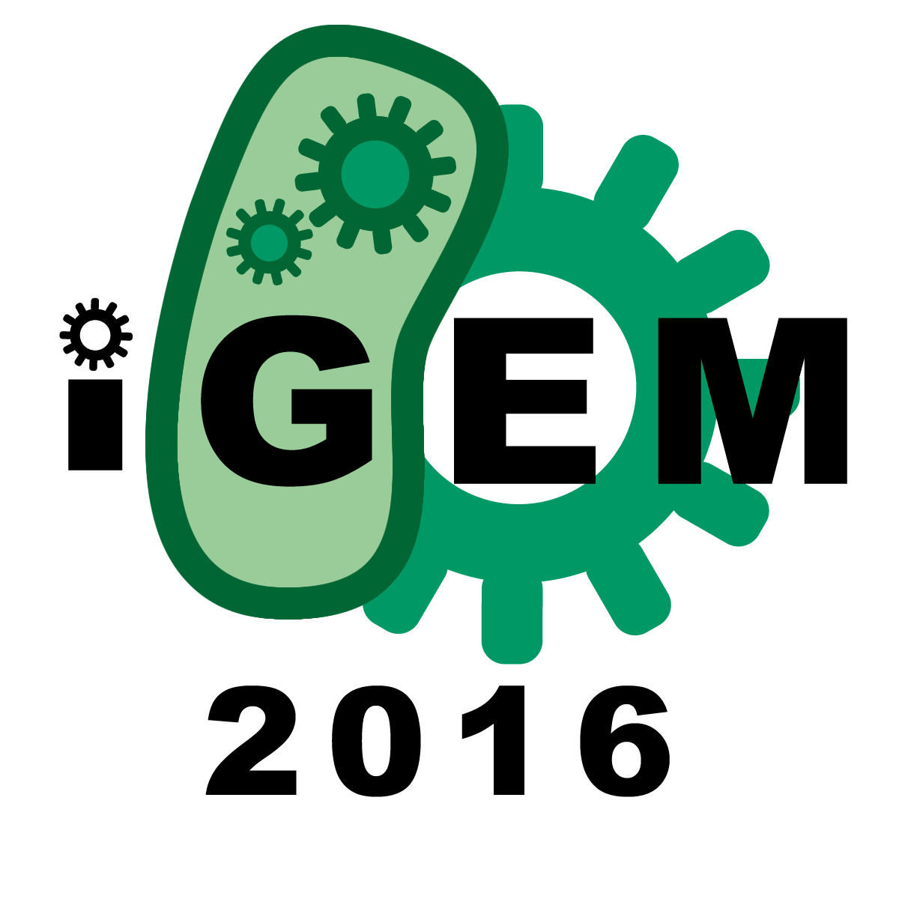

-
Extraction of the total RNA of Arabidopsis thaliana, then reverse transcription PCR to obtain the cDNA.Amplification of the CIB1 gene and CRY2 gene from the cDNA. Nest PCR to verify the length and to amplify the PCR product.
Time:14/4/2016~21/4/2016
- Borrowed a plant of Arabidopsis thaliana from Shenyang Normal University and got ready to start the experiment.(14/4)
-
Extracted of the total RNA of Arabidopsis thaliana twice times. The RNA we
extracted for the first time showed a little degraded. The second time,
we changed the extraction kit and improved the grinding method and the
gel testing was here. It was apparent that there existed 3 bands which
might mean 28S、18S、5S RNA.
There was nothing to do with the band of DNA marker. We just wanted to see how did the total RNA degrade and then we performed RT-PCR with the OligdT primer rather than random primers immediately to obtain the cDNA of mRNA.(18/4)

-
Amplified the CIB1 gene and CRY2 gene with designed primers from the cDNA
we extracted before. Both of them showed pretty weak bands which could be
hardly see and need a Nest PCR to increase concentration and to enhance
specificity.(19/4)


-
We extracted and purified the correct length of those two gene fragments
as shown below:
Abstract We extracted the total RNA in a normal way according the kit instruction at the first time. The second time we improved our experiment by changing grinding tools and exposing the plant under blue light overnight. Finally, We have successfully obtained the fragments of the correct length as so far.


- PCR amplification of the tCas9 gene from the commercial pHS-CR042 plasmid. Overlap PCR the tCas9 and CIB1 gene after gel purification respectively. Restriction digest of the overlap PCR product and the expression vector pBD024. Ligation of the digested products and then transformed the ligation product into DH5alpha bacteria cells. Patch and miniprep to obtain our expression plasmid that produces tCas9-CIBN fusion protein.
- PCR amplification of the synthetic VP64. Cloning the VP64 into SK plasmid which is used in our own laboratory. Sending the plasmid to sequence after digest testing. Overlap PCR of the CRY2 and VP64 gene after gel purification respectively. Restriction digest of the overlap products and a commercial plasmid pBD021 and then ligated. Transformed into DH5alpha and patched. Plasmid preparation of the plasmid after colony PCR testing.
- Transformed the pBD024-tCas9-CIBN and pBD021-CRY2-VP64 expression plasmid into BL21 E.coli strain respectively. Cultured in LBK(LB culture with kanamycin antibiotics) overnight. Protein expression induced by arabinose. Protein extraction from the E.coli culture. western blot or Silver Staining after SDS-PAGE Gel electrophoresis to detect if the protein is expressed.
- gRNA designed and booked the specific primers. Cloned the gRNA fragment into the expression plasmid containing CRY2-VP64. Transformed all of the pBD024-tCas9-CIBN, pBD021-CRY2-VP64-gRNA and pCold-GFP (containing the gRNA targeted reporter gene ) into BL21 E.coli strain. Test the function of the light-inducible system in prokaryote cell after selection.
- Used the methods above to construct the eukaryotic expression vector. cloned the right gene into PESC and P426 eukaryotic expression vector respectively. Send the plasmid to sequencing.
- Overlap of the tCas9 and VP64 gene and cloned it to different empty expression plasmids which acted as control experiments.
- Parts preparation. All parts for the submission are amplified using PCR that added the biobrick restriction sites. After the restriction digest, these fragments were cloned into the PSB1C3 vectors. Finally, the parts were verified using colony PCR and send to sequencing.
- Molecular cloning of the part ..... Improved our plasmid....
